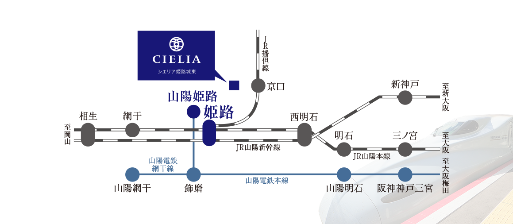
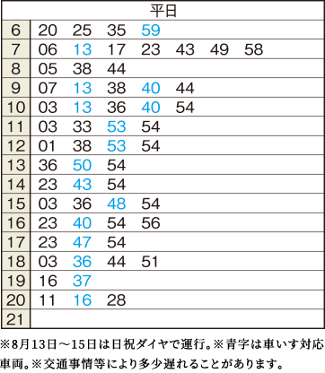

ACCESS
JRの新快速停車駅と山陽電鉄の特急停車駅が利用でき、神戸・大阪方面へ快適なアクセスが可能。
毎日の通勤や通学はもちろん、休日などのご家族揃ってのショッピングなど都心へのお出かけもスムーズ。
また、JR「姫路」駅からは新幹線利用で名古屋、東京や九州方面など全国各地へフットワークが広がり、出張や旅行の際も快適です。

※いずれものぞみ利用
「シエリア姫路城 東」現地からは神姫バス「姫路郵便局前」バス停へ徒歩3分、 そこからアクセスや利便性の集積した姫路駅前にリンクする「姫路駅（北口）」バス停へ7分。 バス便利用によって暮らしの幅が大きく広がりゆとりが生まれます。
神姫バス「姫路郵便局前」バス停
「姫路駅（北口）」バス停行き時刻表（平日）

「シエリア姫路城 東」から目的地までの距離を検索してみましょう。